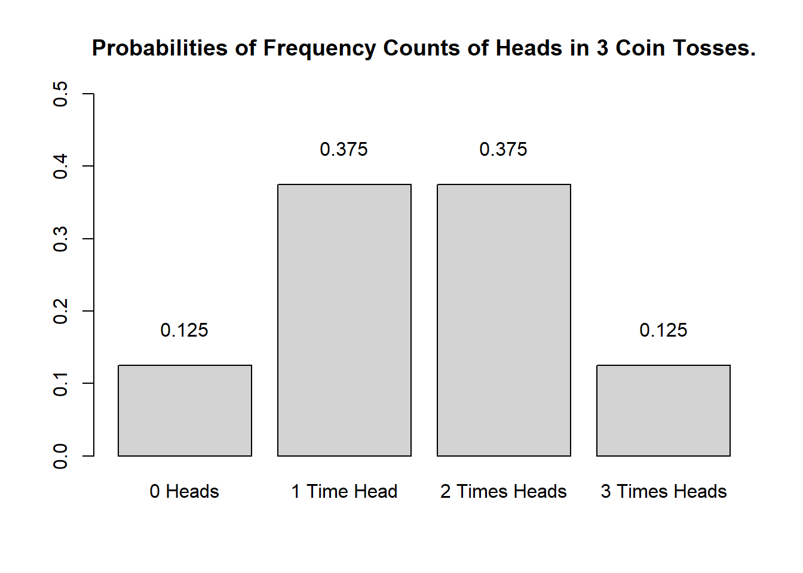
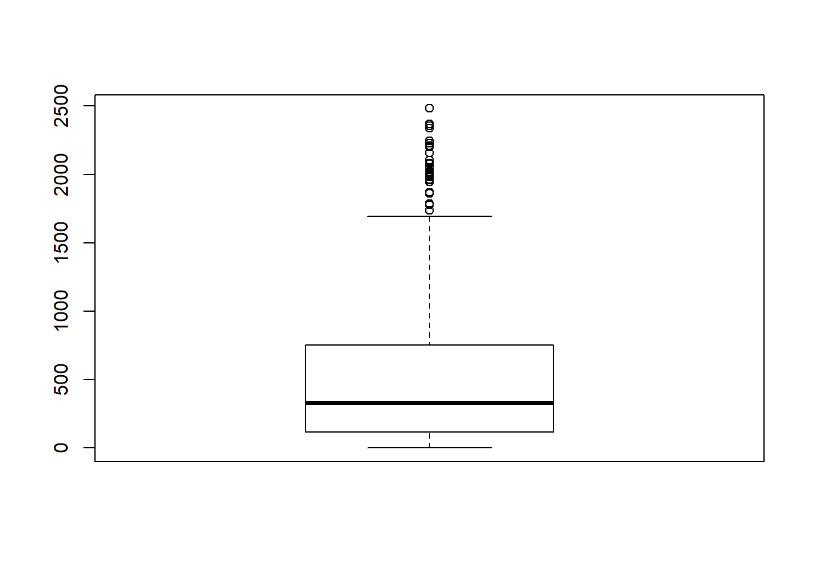
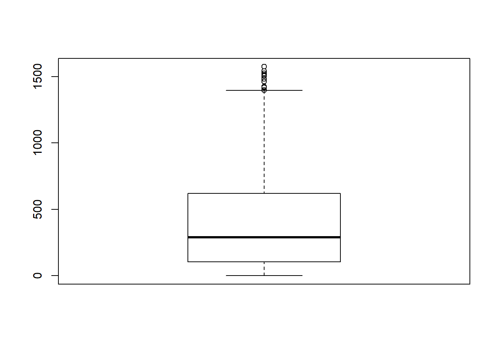
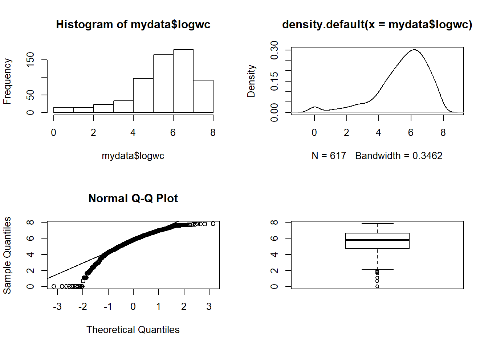
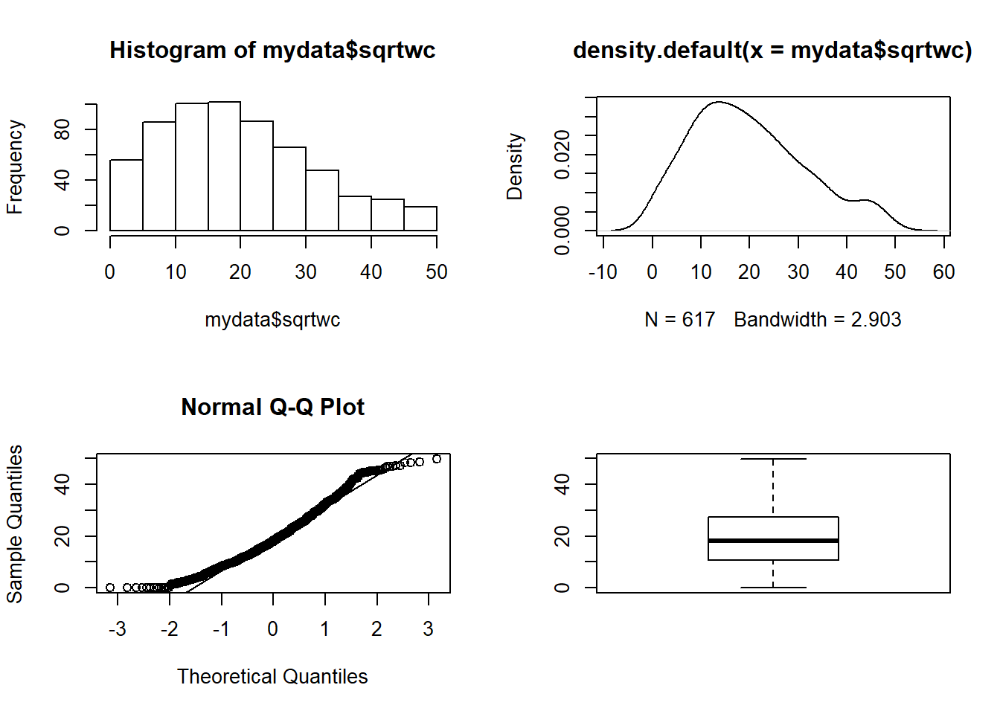

Basics of Quantitative Reasoning
UQ SLC Digital Team
2019-01-24

1 Introduction
Science can be defined as a systematic enterprise that builds and organizes knowledge in the form of testable explanations and predictions about the universe (Wilson 1999, 58). One of the most fundamental concepts in that definition is the concept of testable explanations. Another name for such explanations is “hypothesis”. Thus, Edward Wilson’s definition of science can be rephrased (somewhat crudely) as the methodological testing of hypotheses. This goes to show that hypotheses are at the very heart of the scientific endeveor and, in the fowllowing, we will try to understand what hypotheses are, how to formulate them, and what logic underpins hypothesis testing. To begin with, we will focus on a practical example to avoid talking merely about abstract ideas. The example we will look at is the English comparative construction.
2 Primer: Comparatives in English
In English, the comparative forms of adjectives can be formed according to two strategies: either synthetically/morphologically as in (1) or analytically/periphrastically as in (2).
As a general rule, the comparative of adjectives that have only one syllable are formed by using the morphological strategy while adjectives that have three or more syllables are formed using the periphrastic strategy. However, in some cases where adjectives consist of two syllables, speakers may choose which strategy they apply. In our example, we want to find out, how to proceed when trying to understand the reasons why a speakers chooses the first strategy in one case and the second strategy in another.
synthetic/morphological comparative {#1ex}
proud \(\rightarrow\) prouderanalytic/periphrastic comparative {#2ex}
proud \(\rightarrow\) more proud
To investigate this phenomenon more closely, we should first determine which variables or factors influence which comparative strategy a speaker uses. To answer whcih factors afffect the comparative choice, we need to have a look at the respective literature. In the literature on the English comparative constructions the follwoing influencing factors ahve been named:
Length of the adjective
Adjectives that consits of a single syllable tend to form the comparative form via the morphological strategy as in () while multisyllabic adjectives tend to form the comparative via the periphrastic strategy as in ().
synthetic/morphological comparative: cool \(\rightarrow\) cooler {#3ex}
analytic/periphrastic comparative: attractive \(\rightarrow\) more attractive {#4ex}
Syntactic Function
Adjectives in attributive position prefer the morphological strategy, while adjectives in predicative position prefer the the periphrastic strategy.
“The prouder boy of the two was smiling.” {#5ex}
“The boy to the left was more proud.” {#6ex}
Ending
Adjectives which end in –ly or -y prefer the morphological strategy.
Subsequent than
If a than follows the comparative, then the adjective prefers the morphological strategy as in ().
- “This joke is funnier than the other one.” {#7ex}
It helps to create an overview table for the variables that have been shown in the literature to significantly affect the choice of the comparative strategy. Both better and worse examples of such overview tables are shown in (Gries 2009, 27–30). To answer our example question, we have to define the variables in order to formulate a proper hypothesis in the next step.
An example for such a hypothesis would, for instance, be “If an adjectives has only one syllable, then a typical native speaker will prefer the morphological variant”. The next question then is how to test such a hypothesis and which concepts underly hypothesis testing. And these questions and issues are addressed below.
3 Hypotheses
Probabaly the most important task in empirical research is hypothesis testing. A proper scientific hypothesis is commonly - but not neccessarily - a general assumption in the form of a statement. Hypotheses are tested by comparing systematic observation with the predictions of the hypothesis. More specifically, in order to test hypothesis one seeks for observations which contradict and are at odds with the hypothesis. If we find such a counter example and we have determined that it is an accurate observation, then the hypothesis is falsified, i.e. is is not correct.
If we proposed the hypothesis “Apples always fall down.” and we find an example of an apple not falling down, then our hypothesis would be falsified.
Discussion Time!
Can you thnk of cases where apples do not fall down? How would we have to modify our hypothesis to accommodate potential counter-examples?
The fact that hypothesis must be falsifiable is a defining feature of hypotheses and it means that for a statement to be a hypothesis, it must be falsifiable (which does not mean that it must be false!).
The for trying to falsifying rather than prooving or validating hypothesis, lies in the act that falsification is possible while providing proof for an emirical fact is impossible: If we make only one observation which refutes a hypothesis, the hypothesis is falsified. No matter how many evidence we have for that hypothesis, the hypothesis remains falsified. It is therefore impossible to proove an empirical hypothesis! There are, however, statements that cannot be disproven or falsified - either for technical reasons (@ref(exh3)) or because they are subjectiv (@ref(exh4)).
There are forms of life in the Andromeda galaxy. {#exh3}
I like chocolate ice cream better than vanilla ice cream. {#exh4}
Statements that cannot be falsified are called “speculation”. Speculation is nothing bad or somehting worthless - on the contrary! - but they simply fall outside of the realm of empirical science. Exacmples for the creativity and the usefulness of specualtion are, for instance, art, literture, music, and philosophy.
Summing up, hypotheses can be defined as possessing at least four criteria:
Hypotheses are falsifiziable statements about empirical reality.
Hypothesen are testable statments about the empirical world.
Hypothese are unambigious.
Hypotheses are inherently consistent.
Universality cannot be considered a defining feature of hypotheses, because it is - striktly speaking - not neccessary. For instance, we could formulate the hypothesis that a certain archeological model is correct, if we find certain artefacts at a specific place in a certain layer of earth. This hypothesis relates to a a very specific singular event but it would still be a falsifiable and testatble statement (and thus a hypothesis).
3.1 Types of Hypotheses
On a very fiúndamental level, we can differentiate between null-hypotheses (H\(_{0}\)), that claim non-existence of either a state of being or a difference, and alternative or test-hypothesis (H\(_{1}\)) that claim or postulate the existence of of either a state of being or a difference. Among test-hypotheses, we can furthermore distinguish between undirected hypotheses which claim that one sample is different from another sample, and directed hypotheses which claim that a feature of one sample is bigger, smaller, more frequent, or less frequent, etc. Thus, a hypothesis that group A will perform better in an exam is a diercted testhypothesis while an undirected hypothesis would merely claim that they differ in their test restults. In cotrast, the null-hypothesis would claim that there is no difference between the groups in terms of their performance in that exam.
An additional distinction among hypotheses is the difference between deterministic and probabilistic hypotheses. While we are edaling with a determinitic hypothesis in () because it is a categorical claim, we are dealing with a probabilistic hypothesis in () bcause, here, the hypothesis simply claims that the likelihood of Y is higher if X is the case (but not neccessarily categorically).
If the length of two words in an English phrase is different, then the shorter word will always preceed the longer word. {#exh1}
If the length of two words in an English phrase is different, then it is more likely for the shorter word to preceed the longer word than vice versa. {#exh2}
3.2 Why Testing The Null-Hypothesis?!
Although it is counter-intuitive, we do not actually test the test-hypothesis but we test the null-hypothesis. This means that hypothesis testing in empirical research typically follows the scheme described below.
Make an observation (e.g. My keys are gone!)
Deduce a Test-Hypothesis (H1) based on observation (e.g. My keys are on the table next to the TV!)
Formulate Nullhypothesis (H0) (e.g. My keys are not on the table next to the TV!)
Determining the level of significance at which the H0 is rejected ()
Formulate potential results: what resulst are possible wnad what do they mean for the H0 and H1? (My keys are not on the table next to the TV!: H0 cannot be rejected, formulate new H1)
Design experiment/study/research (e.g. I will go over to the TV and see if my keys on the table next to the TV.)
Conduct experiment/study/research (e.g. Actually go over to the TV and see if my keys on the table next to the TV.)
Statistical analyse
Interpretation of the results (e.g. My keys are not on the table next to the TV so I must have lost them elsewhere!)
In case H0 could not be rejected: Formulate new H1. (e.g. My keys are on the kitchen table!)
We will now have acloser lok at how to formulate hypotheses and that formulating hypotheses is formulating expected outcomes/explanations in a formal descritption.
Nullhypothesis (H_{0}) Groups A and B do not differ systematically! (\(\mu\)A = \(\mu\)B)
Testhypothesis (H_{1}a) Groups A and B differ systematically! (\(\mu\)A \(\neq\) \(\mu\)B; ungerichtet)
Testhypothesis (H_{1}b) Group A has significantly better results/higher levels of x compared with group B. (\(\mu\)A \(>\) \(\mu\)B; gerichtet)
Was bedeutet das nun und was testen wir eigentlich? Wir testen, wie wahrscheinlich es ist, das die Ergebnisse durch Zufall zustande gekommen sind. Ist die Wahrscheinlichkeit hoch (p \(\ge\) .05), dass die Ergebnisse zufällig zustande gekommen sind, dann verwerfen wir die H_{0} nicht. Ist die Wahrscheinlichkeit gering (p \(<\) .05), dass die Ergebnisse zufällig zustande gekommen sind, dann verwerfen wir die H_{0} und nehmen statt dessen die H_{1} an! Um diese Logik besser zu verstehen, werden wir im Folgenden auf Wahrscheinlichkeiten eingehen und welche Rolle diese in der quantitativen Forschung spielen.
% bearbeiten XXX
3.3 Exercises
- Which of the follwoing sentences are hypotheses? Briefly explain your results!
Smoking could have negative effects on one’s health.
Alcohol is a gateway drug.
If alcohol is a gateway drug, then it should be criminalized.
If alcohol is a gateway drug but tabacco is not, then a significantly higher proportion of drug addicts have consumed alcohol compared with the proportion of drug addicts who have smoked before taking drugs.
Alcohol is a gateway drug, when/if it is illegal.
Colorless green ideas sleep furiously.
Nightingales dream in Italian.
What four characteristics do hypotheses have?
Come up with (a) three directed hypotheses and (b) three undirected hypotheses.
Oftentimes, it is not that easy to differentiate between hypotheses and other types of statements. Find a partner and come with statemenst that are not hypotheses and discuss why these statements are not hypotheses.
Find a partner and come up with statements that can be classified as both hypotheses and non-hypotheses and be prepared to explain your reasoning to the group.
4 Significance and Probability
Hypothesis testing fundamentally builds on probabilites - or more precisely probabilities of error which is an estimation for the likelihood of the H0 being true given the data. This type of probability is typically providde in the form of p-values. In a more prosaic (and also coarse-grained, imprecise manner), p-values are an estimate of how likely an outcome is a result of chance. We will delve a little deeper into probabilities and how they relate to hypothesis testing below.
4.1 Significance Levels
Before consucting a study, it is adviasble to determine the so-called significance or \(\alpha\) level. This \(\alpha\) level of significance Signifikanzniveau gibt an, wie hoch bzw. niedrig der p-Wert sein darf ohne dass man davon ausgehen muss, das kein signifikanter Zusammenhang zwischen den untersuchten Variablen vorliegt. Es ist hierbei gebräuchlich zwischen drei Stufen des \(\alpha\) Signifikanzniveaus unterscheiden:
p < .001: highly significant - indicated by three stars (***)
p < .01: very significant - indicated by two stars (**)
p < .05: significant - indicated by one star (*)
Wie bereits gesagt, müssen wir, bevor wir testen, einen Wert festlegen, ab dem wir die Nullhypothese ablehnen, das sogenannte Signifikanzniveau. Es liegt normalerweise bei 5%. Wenn die Irrtumswahrscheinlichkeit kleiner als 5% ist (\(p<\).05), lehnen wir die Nullhypothese ab. Schlussfolgerung: Der Zusammenhang zwischen den Variablen ist statistisch signifikant (WICHTIG: Nur, weil die Nullhypothese abgelehnt werden kann, heißt das nicht, dass H_{1} (oder Testhypothese) bewiesen wurde. Statistik kann Hypothesen NIE beweisen.).
4.2 Probability
In the following, we will turn to probability and try to understand why probabilty is relevant for testing hypotheses. This is important at this point because statistics, and thus hypothesis testing, fundamentally builds upon probabilies and probability distributions. In order to understand how probability works, we will investaigte what happens when we flip a coin. The first question that we will be addressing is “What is the probablility of getting three Heads when flipping a coin three times?”.
The probablility of getting three heads when flipping a coin three times is .5 to the power of 3: .53 = .5 times .5 times .5 = .125. The probability of getting Heads twice when flipping the coin three times is .375. How do we know?
The probability of getting 3 heads in tree tosses is 12.5 percent:
.53 = .5 * .5 * .5 = .125
The probability of getting 2 heads in tree tosses is 37.5 percent:
.125 + .125 + .125 = 0.375
But how do we know this? Well, have alook at the table below.
| 1st Toss | 2nd Toss | 3rd Toss | Heads | Tails | Probabilty |
|---|---|---|---|---|---|
| Head | Head | Head | 3 | 0 | 0.125 |
| Head | Head | Tails | 2 | 1 | 0.125 |
| Head | Tails | Head | 2 | 1 | 0.125 |
| Tails | Head | Head | 2 | 1 | 0.125 |
| Head | Tails | Tails | 1 | 2 | 0.125 |
| Tails | Head | Tails | 1 | 2 | 0.125 |
| Tails | Tails | Head | 1 | 2 | 0.125 |
| Tails | Tails | Tails | 0 | 3 | 0.125 |
Given this table, we are in fact, in a position to calculate the probability of getting 100 heads in 100 coin tosses because we can simply fill in the numbers in the formulas used above: .5100 = 7.888609 * 10-31
Okay, let us make a bet..
If head shows, I win a dollar.
If tails shows, you win a dollar.
But given that you know I am cheeky bastard, you do not trust me and calim that I will cheat. But how will you know that I cheat? At which point can you claim that the result is so unlikely that you are (scientifically backed) allowed to claim that I cheat and have manipulated the coin?
So before we actually start with the coin tossing, you operationalize your hypothesis:
H0: The author (I) is not cheating (heads shows just as often as tails).
H1: The author (I) is cheating (heads shows so often that the probability of the author not cheating is lower than 5 percent)
We now throw the coin and head shows twice. The question now is whther head showing twice is lower than 5 percent.
Wir werfen 3 mal. Kopf fällt 2 mal. Wie wahrscheinlich ist es, dass ich nicht schummele und Kopf trotzdem mehr als 2 mal fällt? (In anderen Worten: Was ist die Wahrscheinlichkeit p, dass ich 2 mal oder mehr gewinne und nicht schummele?) Wenn Sie das Signifikanzniveau bei .05 ansetzen, könnten Sie mich dann als Schummler bezichtigen?\[.2cm]
As you can see in the fourth column, there are three options that lead to heads showing twice (rows 2, 3, and 4). If we add these up (0.125 + 0.125 + 0.125 = 0.375). Also, we need to add the case where head shows 3 times which is another .125 (0.375 + 0.125 = .5), then we find out that the probabilty of heads showing at least twice in three coin tosses is 50 percent and thus 10 times more than the 5-percent threshold that we set initially. Therefore, you cannot claim that I cheated.
| 0 Heads | 1 Time Head | 2 Times Heads | 3 Times Heads |
|---|---|---|---|
| 0.125 | 0.375 | 0.375 | 0.125 |

Calculating the probabilities for three coin tosses is still managable manually but is there an easier way to calculate probabilities? A handier way is have a computer caluculate probabilities and the code below shows how to do that in R - a very powerful and flexible programming environment that has been designed for quantitative analysis (but R can, in fact, do much more - this website, for instance, is programmed in R).
# probabilies of 0, 1, 2 and 3 times head in 3 coin tosses
dbinom(0:3, 3, 0.5)## [1] 0.125 0.375 0.375 0.125# probabilies of 2 or 3 times head in 3 coin tosses
sum(dbinom(2:3, 3, 0.5))## [1] 0.5# probabily of 100 times head in 100 coin tosses
dbinom(100, 100, 0.5)## [1] 7.888609e-31# probabily of 58 to a 100 times head in 100 coin tosses
sum(dbinom(58:100, 100, 0.5))## [1] 0.06660531# probabily of 59 to a 100 times head in 100 coin tosses
sum(dbinom(59:100, 100, 0.5))## [1] 0.04431304# at which point does the probability of getting head
# dip below 5 percent in 100 coin tosses?
qbinom(0.05, 100, 0.5, lower.tail=FALSE)## [1] 58In our example, we dealing with a directed hypothesis and not with an undirected hypothesis because we claimed in our H1 that I was cheating and would get more heads than would be expected by chance. For this reason, the test we use is one-tailed. When dealing with undirected hypotheses, you simply claim that the outcome is either higher or lower - in other words the test is two-tailed as you do not know in which direction the effect will manifest itself.
To understand this a more thoroughly, we will consider tossing a coin not merely 3 but 100 times. The Figure below shows the probabilities for the number of heads showing when we toss a coin 100 from 0 occurrences to 100 occurrences.

The next Figure shows at which number of heads the cumulative probabilities dip below 5 percent for two-tailed hypotheses. According to the graph, if head shows up to 40 or more often than 60 times, the cumulative probability dips below 5 perent. Applied to our initial bet, you could thus claim that I ceated if head shows less than 41 times or more than 60 times (if out hypothesis were two-tailed - which it is not).

The Figure below shows at which point the probability of heads showing dips below 5 percent for one-tailed hypotheses. Thus, according to the Figure below, if we toss a coin 100 times and head shows 59 or more often, then you are justified in claiming that I cheated.

When compaing the two Figures above, it is notable that the number at which you can claim I cheated differs according to whether the H1 as one- or two-tailed. When formulating a one-tailed hypothesis, then the number is lower compared with the the number at which you can reject the H0 if your H1 is two-tailed. This is actually th reason for why it is preferable to formulare more precise, one-tailed hypotheses ( as then, it is easier for the data to be sufficient to reject the H0).
4.3 The Normal Distribution
It is important to note here that the above described calculation of probabilities does not work for numeric variables that are intervall-scaled. The reason for this is that it is not possible to calculate the probabilities for all possible outcomes of a reaction time experiment. In such cases, we rely on distribution (typically the normal distribution) in order to detremine how likely or probable a certain outcome is. When relying on distributions, we determine whether a certain values falls within or outside of the area of a distribution that accounts for 5 percent of the entire area of the distribution - if it falls within the area that accounts for less tha 5 percent of the total area, then the resul is called statistically significant (see the normal distribution below).

The normal distribution (or Gaussian curve or Gaussian distribution) shown in the Figure above has certain characteristics that can be derived mathematically. Some of these characteristcs relate to the area of certain sections of that distribution and the mean, median, and mode are identical (and are at the value of the highest point of the normal distribution).
In addition, 50 percent of the total area under the curve are to left and 50 percent of the right of the mean value. Furthermore, 68 percent of the area are within -1 and +1 standard devaitions from the mean; 95 percent of the area lie between -2 and +2 standard devaitions from the mean; 99.7 percent of the area lie between -3 and +3 standard devaitions from the mean.
In addition, 5 percent of the area lie outside -1.96 and +1.96 standard devaitions from the mean (if these areas are combined) (see the Figure below).

Finally, 5 percent of the area lies beyond +1.68 standard devaitions from the mean (see the Figure below).

These properties are extremely useful when determining the likelihood of values or outcomes that reflect certain intervall-scalled variables.
4.4 Exercises
Create a table with the possible outcomes and probabilities of 4 coin tosses (you can consider the table showing the outcomes of three coin tossse above as a guideline).
How likely is it for heads to show exactly 3 times when tossing a coin 7 times?
How likely is it for heads to show exactly 2 or 5 times when tossing a coin 7 times?
How likely is it for heads to show 5 or more times when tossing a coin 7 times?
How likely is it for heads to show between 3 and 6 times when tossing a coin 7 times?
5 What To Do With Non-Normal Data
## [1] 14.2## [1] 14.2##
## Shapiro-Wilk normality test
##
## data: k1
## W = 0.75258, p-value = 0.03144##
## Shapiro-Wilk normality test
##
## data: k2
## W = 0.56501, p-value = 0.0002032## Min. 1st Qu. Median Mean 3rd Qu. Max.
## 9.2 9.6 11.4 14.2 13.7 27.1## Min. 1st Qu. Median Mean 3rd Qu. Max.
## 0.0 0.5 0.7 14.2 1.1 68.7## 25% 50% 75%
## 9.6 11.4 13.7## 25% 50% 75%
## 0.5 0.7 1.1## [1] 9.2 27.1## [1] 0.0 68.7## [1] 2.2## [1] 0.4## [1] 4.1## [1] 0.6## id text.id subfile spk.ref zone date sex age
## 1 1 S1A-001 1 A northern ireland 1990-1994 male 34-41
## 2 2 S1A-001 1 B northern ireland 1990-1994 female 34-41
## 3 4 S1A-002 1 A northern ireland 2002-2005 female 26-33
## 4 5 S1A-002 1 B northern ireland 2002-2005 female 19-25
## 5 6 S1A-002 1 C northern ireland 2002-2005 male 50+
## 6 7 S1A-002 1 D northern ireland 2002-2005 female 50+
## reside relig word.count
## 1 belfast protestant 765
## 2 belfast protestant 1298
## 3 belfast catholic 391
## 4 belfast catholic 47
## 5 belfast catholic 200
## 6 belfast catholic 464
##
## Shapiro-Wilk normality test
##
## data: mydata$word.count
## W = 0.82322, p-value < 2.2e-16
## [1] 617## [1] 573
##
## Shapiro-Wilk normality test
##
## data: mydata$logwc
## W = 0.90171, p-value < 2.2e-16
##
## Shapiro-Wilk normality test
##
## data: mydata$sqrtwc
## W = 0.96771, p-value = 2.075e-106 Alpha and Beta Errors
Die Frage ist nun, warum man im vorherigen Beispiel nicht einen einfachen \(\chi\)^{2}-Test rechnen sollte. Das stärkste Argument dagegen ist hat mit einem sehr gewichtigen Problem zu tun, welches dazu unter anderem geführt hat, dass multivariate Verfahren entwickelt wurden: Dem Ansteigen der Fehlerrate bei wiederholten Tests. Wir haben in Sektion gesehen, dass wir gewöhnlich ein Signifikanzniveau von 5% annehmen. Dies bedeutet aber auch, dass durchschnittlich bei jedem 20.sten Test, der einen Signifikanzwert von .05 hat eine Fehleinschätzung vorliegt, da durchschnittlich eines von 20 als signifikant Ergebnissen in Wirklichkeit auf einer zufälligen Verteilung beruht und damit nicht durch die gemessenen Faktoren verursacht wurde. Rechnen wir nun mehrere Tests in Folge, so summieren sich diese Wahrscheinlichkeiten und schon bei 4 Tests, die aufeinander folgen 18.5% wie man mit Formel leicht errechnen kann (cf. Formel ).
\[\begin{equation} 1 - .95^{n} = Fehler \label{eq:inflatederrors} \end{equation}\] \[\begin{equation} 1 - .95^{4} = 1 - 0.814 = 0.185 \label{eq:inflatederrorsbsp} \end{equation}\]Wir werden auf dieses Beispiel zurückkommen, aber zuerst werden wir unterschiedliche Arten von Fehlern betrachten.
Man unterscheidet zwischen \(\alpha\)- (alpha) und \(\beta\)-Fehlern (beta), wobei \(\alpha\)-Fehler aussagen, dass ein Zusammenhang besteht, obwohl er in der empirischen Wirklichkeit nicht besteht. Bei \(\beta\)-Fehlern wird davon ausgegangen, dass ein Zusammenhang nicht besteht, obwohl er in der empirischen Wirklichkeit vorhanden ist (vgl. Tabelle ).
Zu dem Unterschied zwischen \(\alpha\)– und \(\beta\)–Fehlern läßt sich sagen, dass generell \(\beta\)–Fehler zu bevorzugen sind, da sie lediglich aussagen, dass aufgrund der Datenlage nicht davon ausgegangen werde kann, dass \(X\) oder \(Y\) der Fall ist, während bei \(\alpha\)–Fehlern falsche Aussagen Teil des anerkannten Wissens werden. Als Daumenregel gilt, dass konservativeres und zurückhaltenderes Verhalten wissenschaftstheoretisch weniger problematisch ist und somit eher \(\alpha\)– als \(\beta\)–Fehler vermieden werden sollten.
Nachdem wir nun geklärt haben, welche Arten von Fehlern es gibt und dass sich Fehler aufsummieren, betrachten wir einen verwandten Begriff: (Independence).
7 Independence
Wäre es so, dass sich Fehler immer aufaddieren, dann wäre Statistik nicht möglich, da jeder neue Test alle vorhergehenden Tests berücksichtigen müsste und durch das Aufsummieren der Fehler die Fehlerrate gegen Unendlich tendieren würde. Es kann also nicht so sein, dass sich Fehler immer aufsummieren. Was bestimmt nun, ob sich Fehler aufsummieren oder nicht? Die Antwort lautet: Unabhängigkeit.
Wenn Tests voneinander unabhängig sind, dann summieren sich deren Fehler nicht auf, wenn Sie allerdings miteinander in einem Zusammenhang stehen, dann summieren sich die Fehler. Unabhängigkeit hat in der Statistik allerdings eine von der Alltagssprache abgewandelte Bedeutung: In der Statistik versteht man unter Unabhängigkeit die Unabhängigkeit der Hypothesen. Handelt es sich um Spezifikationen von allgemeineren Hypothesen, so sind die spezifizierten Hypothesen nicht unabhängig von der allgemeinen Hypothese, und sie sind nicht unabhängig von den anderen spezifizierten Hypothesen. In anderen Worten, wenn wir mehrere spezielle Hypothesen im Rahmen einer allgemeineren Hypothese testen, dann sind die Hypothesen streng genommen nicht unabhängig und können nicht so behandelt werden.
Ein verwandtes Phänomen haben wir in Sektion kennengelernt: Der Grund warum wir nicht einfach einen neuen \(\chi\)^{2}-Test rechnen konnten liegt darin, dass erst ein Test durchgeführt würde, bzw. wurde eine Tabelle erstellt unter der Annahme, dass sich die Emotionsmetaphern in unterschiedlichen Registern verschieden Realisiert werden. Der folgende Test baute darauf auf und testete die spezifizierte Hypothese, dass sich zwei bestimmte Metaphernarten in zwei bestimmten Registern unterscheiden würden. Wir haben es also mit zwei Hypothesen zu tun, wobei die zweite Hypothese eine Spezifikation der ersten Hypothese darstellte. Die Hypothesen standen also in einem Zusammenhang und waren nicht unabhängig. Folglich hätten sich die Fehler addiert, wenn wir nicht berücksichtigt hätten, dass nicht nur die Teiltabelle aus den Daten extrahiert wurde, sondern wir eine Teiltabelle einer größeren Tabelle testen wollen.
Ein zweites und vielleicht noch wichtigeres Merkmal von Unabhängigkeit ist, dass unabhängige Variablen nicht miteinander korrelieren dürfen. Tun sie dies dennoch, so spricht man von Multikollinearität (mehr dazu in Sektion ).
8 Corrections
Wie kann man nun damit umgehen, dass man mehrere Hypothesen testen möchte? Zum einen kann man multivariate Verfahren verwenden, wie wir in Sektion sehen werden. Eine andere Methode besteht darin, Korrekturen einzubauen, um so zu garantieren, dass das \(\alpha\)–Niveau auch bei wiederholten Tests bei 5% bleibt.
Die bekannteste und wahrscheinlich auch am weitesten verbreitete Korrektur ist die Bonferroni-Korrektur, bei der das \(\alpha\)–Niveau durch die Anzahl der Tests geteilt wird. Beispielsweise sollen bei einer Untersuchung 4 Tests durchgeführt werden, dann wird das \(\alpha\)–Niveau auf .05/4 = .0125 gesenkt, sodass die Summer der \(\alpha\)–Niveaus der vier Tests wieder das gewohnte 5%-Niveau herstellt. Der Nachteil dieser Korrektur ist, dass Sie eher konservativ ist und daher zu einem relativ hohen \(\beta\)–Fehlerrate führt.
References
Gries, Stefan Th. 2009. Statistics for Linguistics Using R: A Practical Introduction. Berlin & New York: Mouton de Gruyter.
Wilson, Edward O. 1999. Consilience: The Unity of Knowledge. New York: Vintage.